Governance and facilitation
Training groups to run meetings and make decisions where every voice is heard, so communities own what they build.
I'm Brad Sitzer, a governance trainer, community builder and engineer turned educator. I help groups run with an action orientation, and I build learning hubs, residencies and digital work for young people across the Cape Flats and Muizenberg.
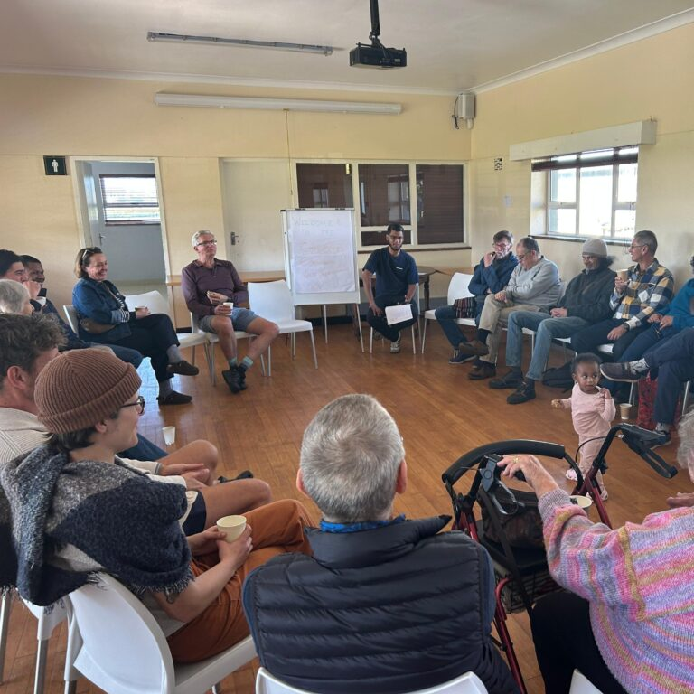
Training groups to run meetings and make decisions where every voice is heard, so communities own what they build.
Intentional-living residencies and a micro-church in Muizenberg, where young adults grow together and engage the homes around them.
Through Techmission, creating income for young people in the digital gig economy and coaching leaders to embrace technology.
I spent eight years in corporate engineering as an Automation Engineer, leading teams of instrumentation and software technicians at multinational companies. Then my career shifted towards systemic change in the education of young people in under-resourced and high-crime communities.
Since then I've created learning hubs on the Cape Flats, with a focus on Mitchells Plain and Khayelitsha. In 2022 I moved to Muizenberg to explore the socioeconomic divide between and within communities, especially Mitchells Plain and Muizenberg.
My hope is that people realise real justice in burdensome paradigms, through incremental, iterative steps of growth. I do this work through an intentional Christian lens.
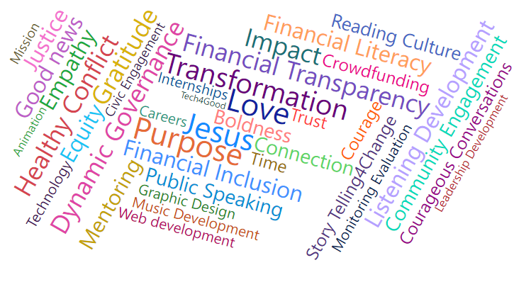
Each of these starts from one question: how do we create lived experiences where our neighbours care for each other, and we live in a loving world?
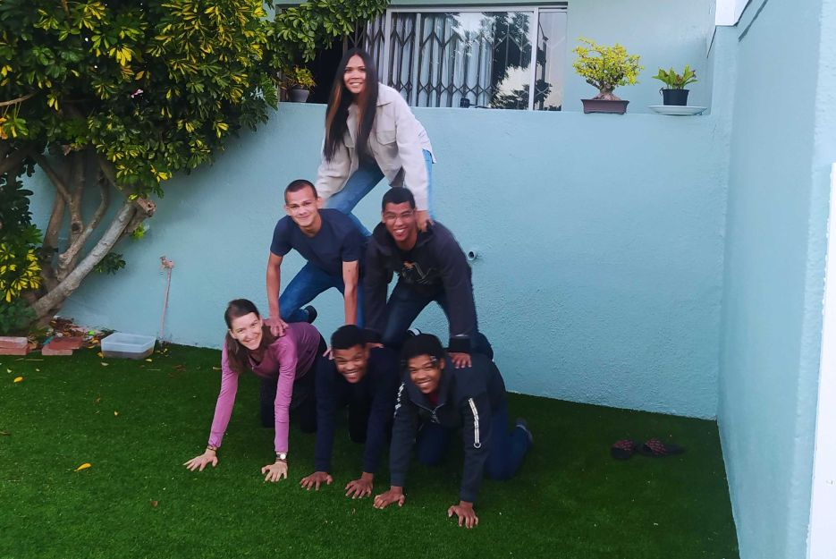
An intentional-living residency in Muizenberg for young people aged 18 to 25. Residents grow in who they are and gain tech training for tech jobs, while we build relationships with the homes around us.
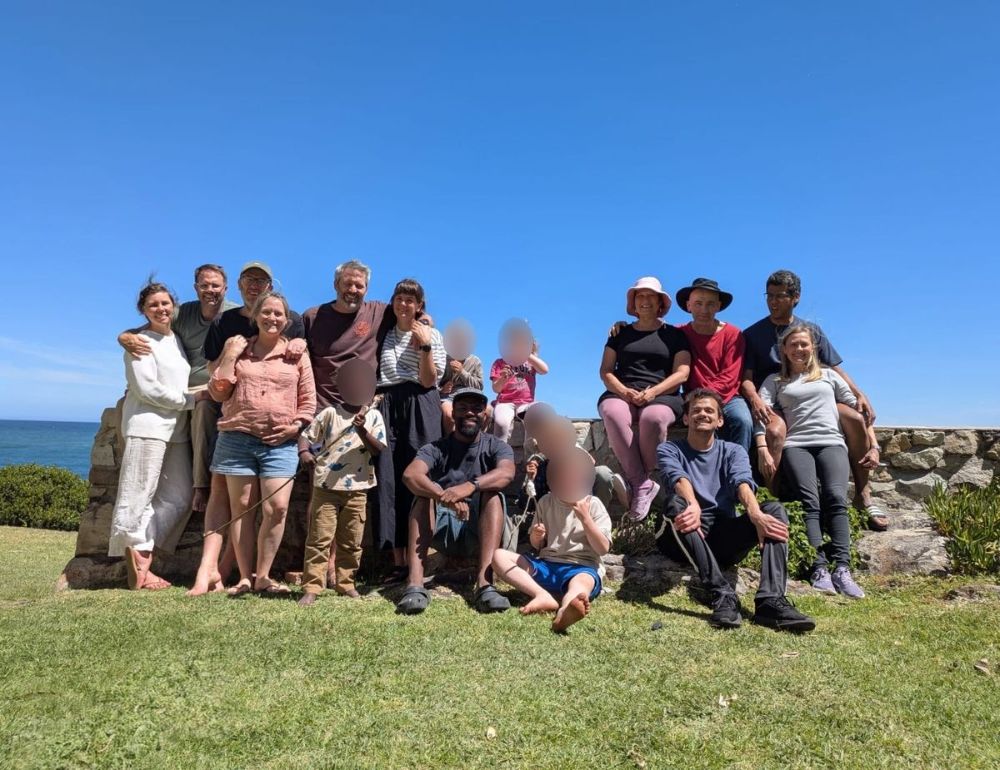
A micro-church creating authentic rhythms of doing life together, partnered with Renewal Network South Africa, a sister network of Underground Tampa Bay with over 100 micro-churches.
A digital marketing company where youth earn through social media marketing, web development and video editing. We also coach leaders in 21st-century leadership and help them build authentic online communities. techmission.co.za
About ten neighbours from across the road from Grace Cafe met twice a month to offer their gifts and build a better sense of community. Through lockdown, they became friends and regarded the group a real success. It's one of the most exciting projects I've been part of.
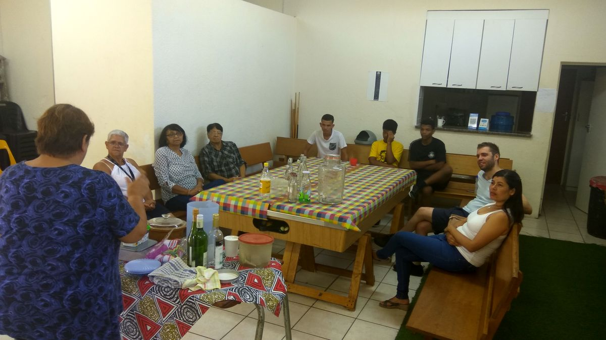
I founded Grace2Learn, whose flagship learning hub, Grace Cafe, ran in Rocklands, Mitchells Plain. I developed an independent education model built around local people, 21st-century learning, governance systems and multi-generational engagement, then handed it over to the local church and community. grace2learn.co.za
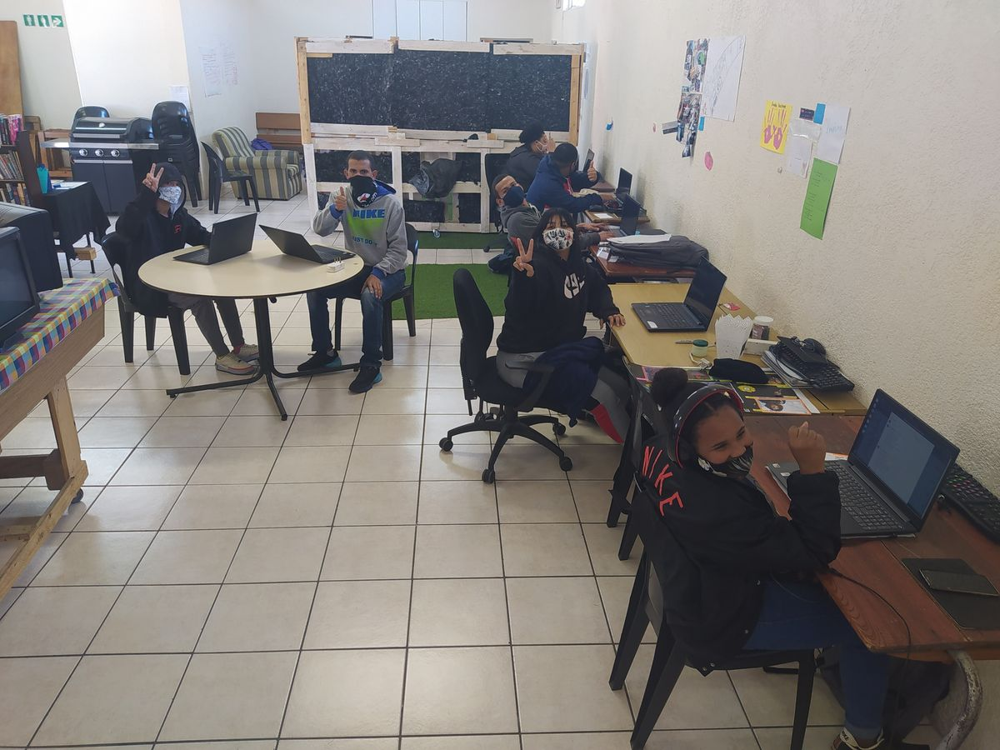
A residency for emerging leaders to do life together and grow their impact in the communities they serve. I developed healthy household rhythms and walked alongside one aspiring leader academically, technically and emotionally.
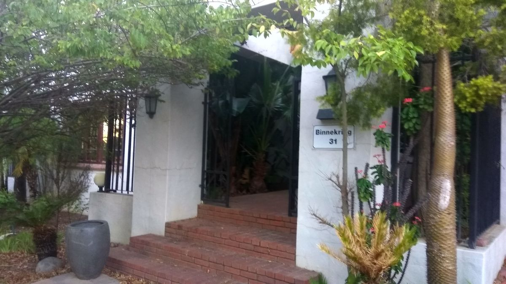
I connected with potential collaborators across Philippi, Crossroads and Nyanga, using Theory U to sense shared intentions and test small actions together. Trust was the key building block, and many lessons from this time shape my work today.
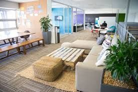
I managed the organisation's tablet-based educational centres across the Western Cape: making sure the technology and best-practice learning methods were used well, and growing the number of active centres.
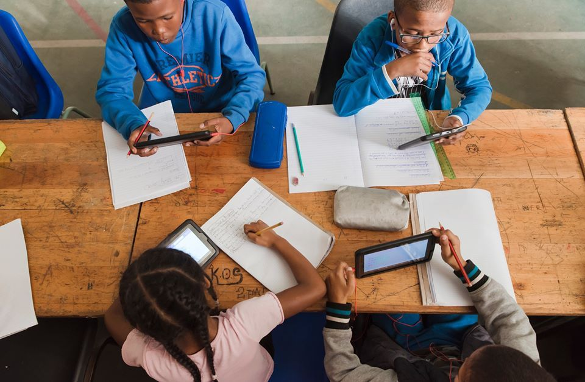
At multinational companies, I worked as an Automation Engineer and led teams of instrumentation and software technicians.
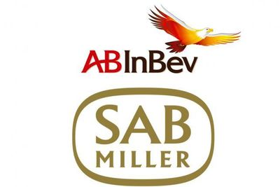
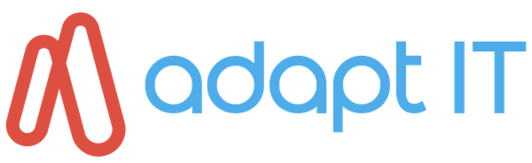
Plus short courses in leadership, management, instrumentation and software automation, human motivation, learning environment design and entrepreneurship.
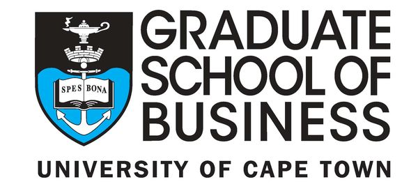
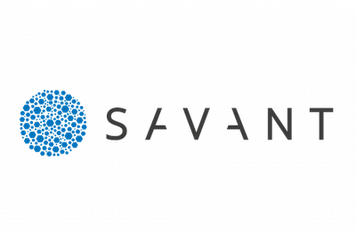
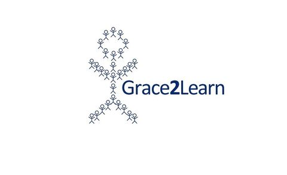
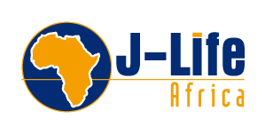
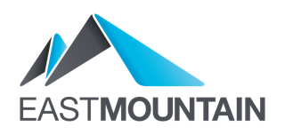
PowerWalk turns the principles I use in governance and facilitation into something you can play, on a computer or a phone.
You lead a small group of neighbours with one demand. Walk the board, listen to people, and pitch to the right ones in the right way to move public opinion before the third round ends.
Four Cape Town scenarios, from a growing landfill to a street braai, and from Vrygrond co-design to a young company run by consent.
Play PowerWalk →Friends list up to three gifts they actually want, with links and prices in Rands. Everyone chips in towards the person's pool via PayFast, progress glows on the board, and the recipient gets emailed as each payment lands.
Many of these projects don't generate revenue straight away, and some have long-term impact in mind. If you feel a connection to this work and are called to contribute, every bit helps.
Brad Sitzer is a Governance Trainer in Cape Town. He helps groups run meetings where every voice is heard, and works on youth education and inclusive innovation on the Cape Flats and in Muizenberg.
He trains groups in governance and facilitation, runs learning hubs for young people in under-resourced communities, and is involved with Techmission, Grace2Learn and the Abide Collective Residency and Salt Church in Muizenberg.
Techmission is a digital marketing company at techmission.co.za that creates income opportunities for youth through social media marketing, web development, video editing, and leadership coaching for leaders.
Grace2Learn is a non-profit learning development hub at grace2learn.co.za. Its learning hub in Mitchells Plain ran from 2017 to 2022.
The Abide Collective Residency is an intentional-living residency in Muizenberg for young people aged 18 to 25. Residents grow in who they are and gain tech training for tech jobs, while building relationships with the surrounding homes. It has run since 2022.
Salt Church is a micro-church in Muizenberg that has run since 2022. It is partnered with Renewal Network South Africa, a sister network of Underground Tampa Bay, which has over 100 micro-churches.
He completed a BSc and Honours in Electrical Engineering at the University of Cape Town (2006), a higher certificate in Life Coaching (2015), and a Masters in Philosophy in Inclusive Innovation at UCT's Graduate School of Business (2020).
Yes. PowerWalk at bradsitzer.co.za/powerwalk/ is a 3D community organising game where you lead neighbours with one demand and move public opinion using Nonviolent Communication and sociocracy.